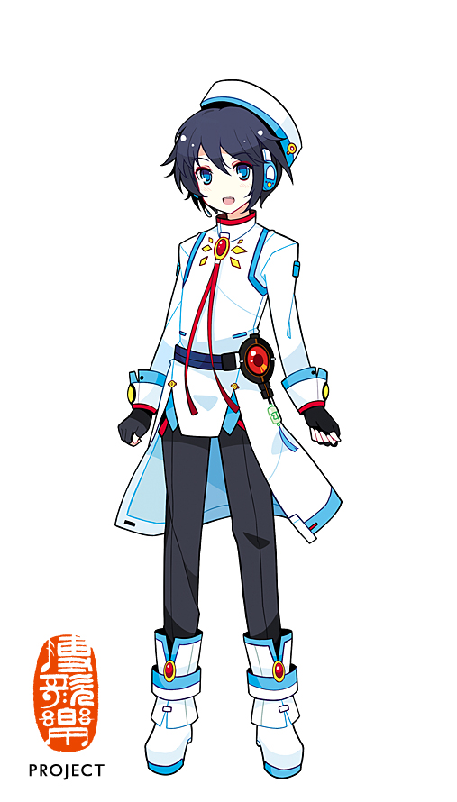

“徵音飞羽，一梦南柯。”
14 岁的天才混血少年，智商 168，14 岁就已经升入高中。平常总是一副人畜无害的笑容，实际上是个深度宅、黑客（代号 MOKE）、MAD 编辑达人和视频站 UP 主。在乐队里是键盘手，擅长街舞，偶尔会被误认成女孩子，但站上舞台的那一刻，没人会认错他的声音。

#0080FF徵羽摩柯有着深蓝色的头发和蓝色的瞳孔，形象由 SAKU 设计初稿、ideolo 改编，V4 形象由 TID 绘制。角色设定是 14 岁的混血少年，智商 168，14 岁就已经升入高中，在乐队中担任键盘手，擅长街舞。他的音之精灵“绯”是一只未涅槃的凤凰雏鸟，可以化身为翼状键盘。
平常总是一副人畜无害的笑容，但实际上是个非常深度的宅，出没于各大宅论坛，是 MAD 编辑达人、视频站 UP 主，更是知名黑客，代号 MOKE。在部分人眼里是“神一般的存在”。因为外形的原因，偶尔会被人误认为女孩子，也有很怕寂寞的一面，对乐队里的其他人有依赖感，很希望给乐队的大家帮上忙。
平常不善于主动和人交谈，让人觉得他很老实，但只有在熟悉的人面前才会露出宅的本性。对于动画、游戏之类的宅话题会表现出超级严格的评论家态度，反过来对自己没什么兴趣的话题则完全没有反应。声源由配音演员苏尚卿提供，声音清亮而有少年感，既能驾驭电子感强烈的曲目，也能在叙事性作品里唱出细腻的情绪。
“异托邦 LOVETOPIA”系列第六作，讲述少年黑客希寇（徵羽摩柯饰）的故事。ACE 中文原创歌曲，殿堂曲，摩柯在主歌与和声之间切换的声线，把少年感与暗涌的情绪同时推到了前面。
徵羽摩柯的官方试听 DEMO 曲，2017 年 6 月 17 日在 Vsinger Live 全息演唱会上首次公开。融合电子与古风的编曲，讲述游戏少年在虚拟与现实之间穿越轮回、追寻情缘的故事。完整 PV 于 2019 年 12 月 10 日投稿，已进入殿堂。
摩柯印象曲系列第一作，2018 年 8 月 3 日投稿。标题源自编程语言中经典的“Hello world”演示程序，歌词与 PV 处处映照着技术宅与键盘手摩柯眼中的世界。这是徵羽摩柯第一首殿堂曲，也是第一首独唱传说曲。
一首关于“购物车清空了吗、游戏打折买了吗、手办预购了吗”的宅向日常曲。旋律轻快，歌词扎心又好笑，是摩柯作品中少见的、把“穷”唱得这么有共鸣的一首。
收录于 ilem 十二周年投稿庆典的单品作品。在庆典合集的语境里，摩柯的声音被放进了一个更开阔的叙事位置，也是他在近期创作中一次值得留意的出现。
“异托邦 LOVETOPIA”系列中的另一首徵羽摩柯作品。在系列统一的叙事框架下，摩柯的声线承担了少年角色特有的脆弱与锋利，是理解他在 ACE 时期声音变化的一个切面。
在“Vsinger Live 洛天依 2017 全息演唱会”上首次公开，独唱《虚拟少年》，徵羽摩柯的声音第一次出现在舞台上。
V4 中文声库正式发布，形象由 TID 绘制。这是徵羽摩柯作为 VOCALOID 歌手的正式出道。
Vsinger 官方宣布徵羽摩柯 ACE AI 声库进入制作阶段，为他的声音带来了新的合成路径与表现空间。
以《虚拟少年》首次公开发声，作为 Vsinger 成员正式登场。
参与 BML-VR 演出，《虚拟少年》等曲目登上线下舞台。
作为 Vsinger 全员之一参与线上演唱会，持续出现在虚拟歌手的大型舞台叙事中。
《少年汹涌》等 ACE 时期作品陆续投稿，摩柯的声音在新的系列框架下继续生长。
#0080FF 是徵羽摩柯的代表色，明亮、清透，带着数码屏幕的冷光感，却不显得遥远。它对应的是他深蓝色的头发、蓝色的瞳孔，以及那个在键盘前、在代码里、在舞台上都能找到自己位置的 14 岁少年。
在 Vsinger 的色谱里，摩柯蓝是最接近“电子”的一道。天依蓝是天空与水，阿绫红是火，薄荷绿是风，龙牙绿是大地，而摩柯蓝更像一块屏幕亮起时的光——安静，但足以照亮一个少年眼中的世界。